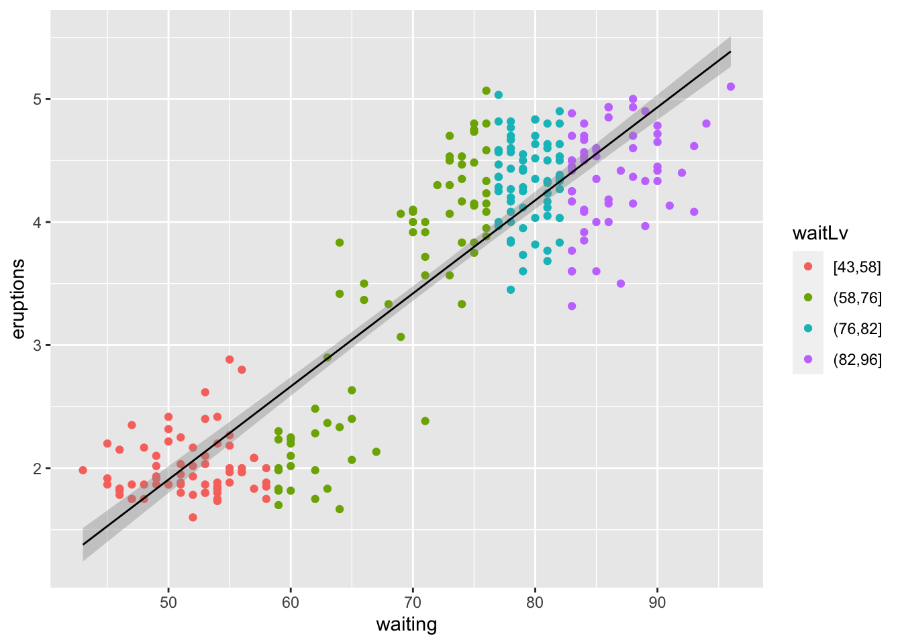

graphics.off()
rm(list = ls())
gc() used (Mb) gc trigger (Mb) limit (Mb) max used (Mb)
Ncells 578448 30.9 1318007 70.4 NA 669402 35.8
Vcells 1057511 8.1 8388608 64.0 16384 1851791 14.2In this post, I’ll make scatter plot with trend line. Scatter plot display two variables on Cartesian coordinates.
Scatter plot is useful and convenient because it can show either continuous variables or discrete variables all.
I usually use the following code for initialization. If you don’t want to remove plots and/or variables, you can skip it.
graphics.off()
rm(list = ls())
gc() used (Mb) gc trigger (Mb) limit (Mb) max used (Mb)
Ncells 578448 30.9 1318007 70.4 NA 669402 35.8
Vcells 1057511 8.1 8388608 64.0 16384 1851791 14.2version _
platform aarch64-apple-darwin20
arch aarch64
os darwin20
system aarch64, darwin20
status
major 4
minor 3.1
year 2023
month 06
day 16
svn rev 84548
language R
version.string R version 4.3.1 (2023-06-16)
nickname Beagle Scouts We want to use as few packages (some might call them “libraries”) as possible. If possible, I’m going to use only the tidyverse package. Tidyverse is one of the most famous packages in R programming, and it’s really powerful and useful.
library(tidyverse)── Attaching core tidyverse packages ──────────────────────── tidyverse 2.0.0 ──
✔ dplyr 1.1.2 ✔ readr 2.1.4
✔ forcats 1.0.0 ✔ stringr 1.5.0
✔ ggplot2 3.4.2 ✔ tibble 3.2.1
✔ lubridate 1.9.2 ✔ tidyr 1.3.0
✔ purrr 1.0.1
── Conflicts ────────────────────────────────────────── tidyverse_conflicts() ──
✖ dplyr::filter() masks stats::filter()
✖ dplyr::lag() masks stats::lag()
ℹ Use the conflicted package (<http://conflicted.r-lib.org/>) to force all conflicts to become errorsWhen I write posts in my blog, I use the built-in dataset because I don’t want the reader to suffer by having to find the data from somewhere else.
The dataset I’ll be using in this post is shown below ⬇️ .
Old Faithful Geyser Data
Waiting time between eruptions and the duration of the eruption for the Old Faithful geyser in Yellowstone National Park, Wyoming, USA.
faithful
A data frame with 272 observations on 2 variables.
[,1] eruptions numeric Eruption time in mins [,2] waiting numeric Waiting time to next eruption (in mins)
A closer look at faithful$eruptions reveals that these are heavily rounded times originally in seconds, where multiples of 5 are more frequent than expected under non-human measurement. For a better version of the eruption times, see the example below.
There are many versions of this dataset around: Azzalini and Bowman (1990) use a more complete version.
First, let’s take a quick look at the contents of the dataset with head() function.
I can see there are 2 columns and both data is number which is double type.
faithful |> head() eruptions waiting
1 3.600 79
2 1.800 54
3 3.333 74
4 2.283 62
5 4.533 85
6 2.883 55and check what type is this dataset with class() function.
class(faithful)[1] "data.frame"then check how big this dataset is with dim() function.
faithful dataset has 272 rows and 2 columns. it also very tiny dataset `r emo::ji(“grin”).
dim(faithful)[1] 272 2faithful dataset store into df variable to keep original dataset.
df <- faithfulYou can use ggplot() and geom_point() to create a simple scatterplot.
You may have noticed that there is a linear trend between the variables ‘atmospheric’ and ‘eruptive’.
A scatter plot allows you to notice the trend between these two variables at once 👍.
df |>
ggplot(aes(waiting, eruptions)) +
geom_point()I’ve coloured it to make the linearity along the x-axis values clear.
For continuous values, sometimes the colour difference from adjusent values is not significant.
df |>
ggplot(aes(waiting, eruptions, color = waiting)) +
geom_point()To make the linear relationship between the two variables more visible, I used the cut_number() function to color the ‘waiting’ variable in four separate steps.
This way we can see the value of ‘eruptions’ for each level. In fact, the points of the ‘waiting’ variable colored in blue could probably be combined with the points colored in purple, but for the purposes of this post, I’ll leave them unmodified.
df |>
mutate(waitLv = cut_number(waiting, 4)) |>
ggplot(aes(waiting, eruptions, color = waitLv)) +
geom_point()Anyway, I’ve made a good scatterplot. In addition, I want to add a linear trend equation.
To do that, I need to create a linear model with the lm() function.
It’s a pretty powerful 💪 R function.
I can create a linear model using just the simple lm() function.
# Calculate slope and intercept of line of best fit
linear <- lm(eruptions ~ waiting, data = faithful)
linear
Call:
lm(formula = eruptions ~ waiting, data = faithful)
Coefficients:
(Intercept) waiting
-1.87402 0.07563 linear$coefficients[1](Intercept)
-1.874016 i <- linear$coefficients[1]linear$coefficients[2] waiting
0.07562795 s <- linear$coefficients[2]We got the coefficient value as a result of lm().
I can see that the slope of the trend line I’m plotting is 0.0756279, and the intercept islinear$coefficients[1]`.
It then draws a trend line on the plot with the slope and intercept values.
geom_abline() draws a line with specific slope and intercept values as shown below.
df |>
mutate(waitLv = cut_number(waiting, 4)) |>
ggplot(aes(waiting, eruptions, color = waitLv)) +
geom_point() +
geom_abline(intercept = i, slope = s)If I use geom_smooth() to represent a confidence interval (se = TRUE), I can draw a trend line at once without having to find the slope and intercept values outside.
However, even with geom_smooth(), I still need to know the slope and intercept to plot the trend equations, which can be redundant.
It is users’ choice to use geom_smooth() or geom_abline().
df |>
mutate(waitLv = cut_number(waiting, 4)) |>
ggplot(aes(waiting, eruptions)) + # Should remove "aes(color = waitLv)" in ggplot()
geom_point(aes(color = waitLv)) +
geom_smooth(method = lm ,se = TRUE, color = "black", linewidth = 0.5) # BUT!! to extract equation you should using "lm()"`geom_smooth()` using formula = 'y ~ x'
I put equation in plot with annotate() at proper location. and title, subtitle, name of x-axis and y-axis also display with lab().
Finally I got plot as below.
df |>
mutate(waitLv = cut_number(waiting, 4)) |>
ggplot(aes(waiting, eruptions, color = waitLv)) +
geom_point() +
geom_abline(intercept = i, slope = s, color = "blue", lty = 2) +
annotate("text",x = 50, y = 4.5, label = paste0("y = ", round(s,5) ,"x +",round(i,5))) +
labs(title = "Old Faithful geyser",
subtitle = paste0("Waiting time between eruptions and the duration of the eruption for the Old Faithful geyser","\n",
"in Yellowstone National Park, Wyoming, USA."),
x = "Waiting time to next eruption (min)", y = "Eruption time (min)", color = "Lv. of Wating Time") +
theme_bw() +
theme(legend.position = "bottom")
good luck! 👍
END OF POST